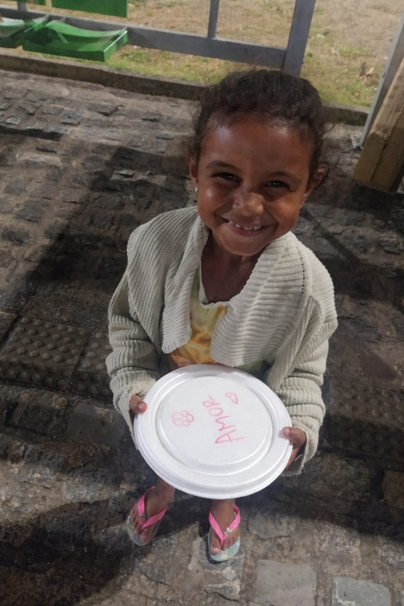
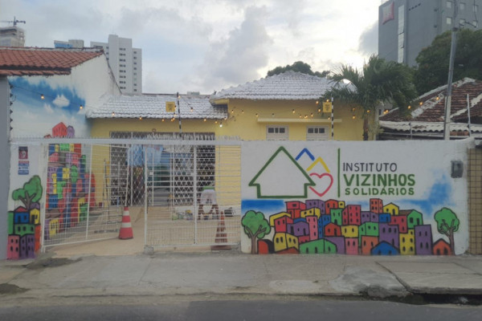

Nascemos no Pina, mas o nosso compromisso com a vida já percorreu milhares de quilômetros. De Pernambuco ao Rio Grande do Sul, passando pelo Sertão e chegando até o Norte do país, veja como a sua ajuda se transforma em ação em qualquer lugar.
Explore nossa Rota de Impacto
Instituto Vizinhos Solidários: Transformando Vidas e Comunidades.
O Instituto Vizinhos Solidários nasceu em março de 2020, quando a empreendedora social Maria Eduarda Fernandes e a nutricionista Mayara Amaral, sensibilizadas pela crise de fome agravada pela pandemia, começaram a preparar 20 marmitas diárias em suas próprias casas para distribuir entre vizinhos necessitados na região de Boa Viagem, Recife. Esse gesto de solidariedade rapidamente inspirou outros moradores a se unirem à causa, originando o nome “Vizinhos Solidários”.
O que começou como uma pequena ação evoluiu para um instituto dedicado a auxiliar aqueles que mais precisam no Grande Recife e Olinda. Até o momento, já fornecemos mais de 500 mil refeições e distribuímos mais de 100 mil cestas básicas em 72 pontos diferentes, abrangendo Recife, Olinda, Jaboatão dos Guararapes e o Sertão de Pernambuco.
Atualmente, alimentamos mais de 20 mil pessoas por mês, contando com o apoio de 50 voluntários, 4 funcionários, diversos doadores individuais e mais de 30 empresas parceiras. Além da distribuição diária de 150 a 200 marmitas, entregamos 2.410 cestas básicas mensais e assistimos 611 famílias através do Mercado Solidário.
Recentemente, ampliamos nossas iniciativas, investindo no esporte como um viés transformador nas comunidades que atendemos, promovendo inclusão e desenvolvimento social.
Mantemos um calendário anual de ações, com atuações significativas em diversas áreas. Realizamos atividades nos hospitais, incluindo o Hospital Otávio de Freitas e o Hospital de Câncer de Pernambuco, e desenvolvemos projetos voltados para idosos. Em 2024, expandimos nossa atuação para o âmbito nacional, prestando assistência às vítimas das enchentes no Rio Grande do Sul, demonstrando nosso compromisso em oferecer ajuda emergencial às comunidades afetadas.
Apoiamos mais de 16 projetos sociais que atuam em todo o Recife, Grande Recife, Olinda e outros estados. Além disso, oferecemos cursos profissionalizantes para proporcionar às pessoas da comunidade oportunidades de uma vida digna e sustentável, juntamente com programas de acompanhamento com assistentes sociais.
Acreditamos que podemos mudar os mundos ao nosso redor. Assim, transformamos vidas, realizamos sonhos e levamos esperança a muitas famílias.
Para saber mais ou contribuir com nossa missão,
visite nosso site: vizinhossolidarios.ong.br
e siga-nos no Instagram: @vizinhos.solidarios
Se preferir, você pode realizar uma doação direta via PIX ou transferência bancária.
Chave PIX:
00020126360014br.gov.bcb.pix0114399887750001525204000053039865802BR5925INSTITUTO VIZINHOS SOLIDA6014RIO DE JANEIRO622905251095D3066E2C472899295ECA66304DCED
Stone Pagamentos S.A. (197)Ag: 0001 | C/C: 9396483-1
Instituto Vizinhos Solidários
Nossa missão é doar amor em forma de alimento e promover o bem-estar e a melhoria da qualidade de vida das pessoas que vivem em situação de vulnerabilidade social.
O Instituto Vizinhos Solidários atua sob a orientação dos seguintes valores: senso de urgência, ética, espírito de equipe, comprometimento e criatividade.
Ser uma organização inovadora, impactante e reconhecida nacionalmente, através do desenvolvimento e implantação de melhorias sociais das famílias, com base nos princípios que provam a nossa excelência.
Evolução estratégica: Da ação emergencial à gestão profissional.
| Relatório | Objetivo |
|---|---|
| Mensal | Monitoramento de KPIs. |
| Impacto | Legado gerado a longo prazo. |
